Batería
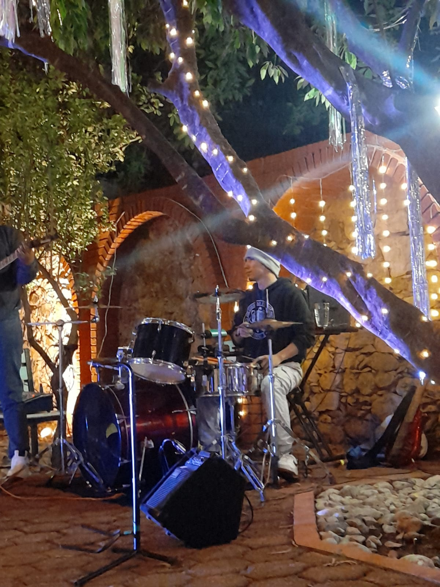
Mi instrumento principal desde 2010.
Siempre me ha gustado el Jazz, el Latin y la Salsa, y eso se refleja en mi forma de tocar.

Mi instrumento principal desde 2010.
Siempre me ha gustado el Jazz, el Latin y la Salsa, y eso se refleja en mi forma de tocar.
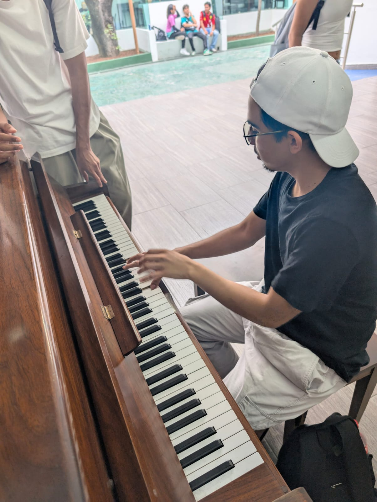
Diplomado en el CAM de CDMX.
El piano me hace sentir la música de una manera más profunda, especialmente el Jazz y el Bolero.
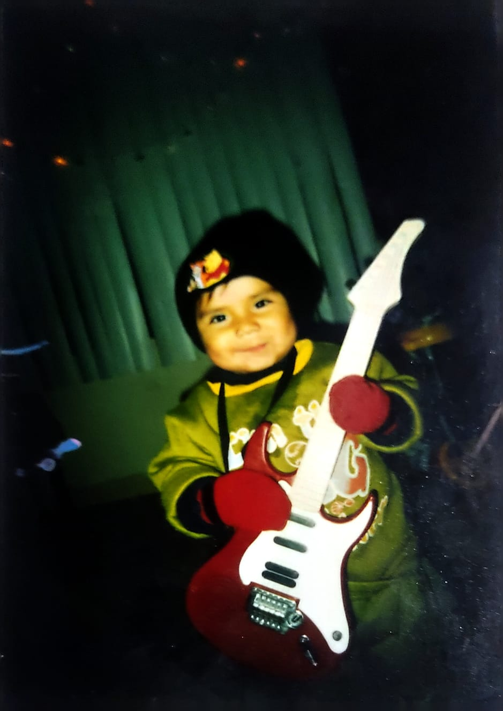
Desde pequeño me he interesado en la guitarra, explorando diversos géneros musicales. Principalmente el bolero y el género romántico.
Pasión por el Latin y la Salsa.
Las congas y los bongós son esenciales para esos ritmos, y me encanta la energía que aportan a la música.
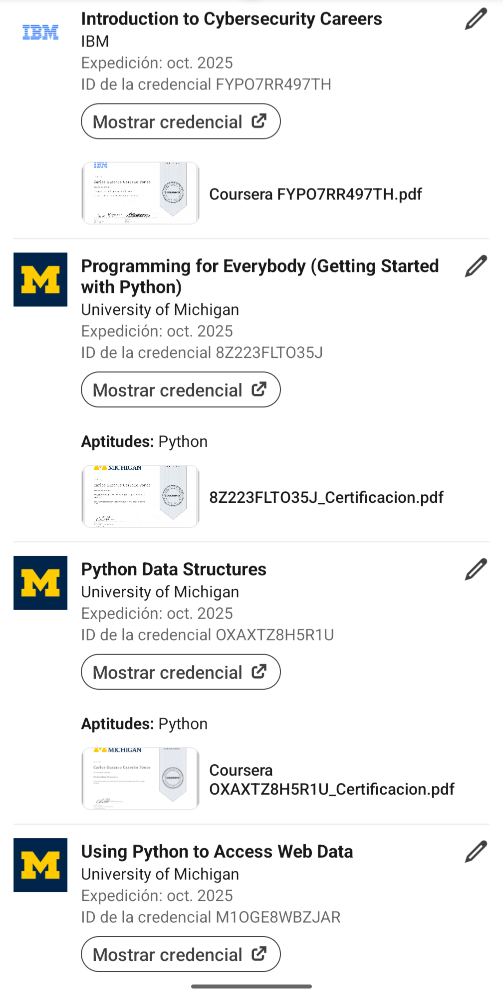
Mi favorito para scripting y certificaciones.
Es versátil y fácil de aprender, ideal para automatización y análisis de datos.
Desarrollo de software robusto.
Java es fundamental para aplicaciones empresariales y móviles, y me gusta su enfoque orientado a objetos.

Esencial para la web.
Permite crear interactividad y dinamismo en las páginas web, siendo fundamental para el desarrollo front-end.
Las escolleras son mis favoritas.
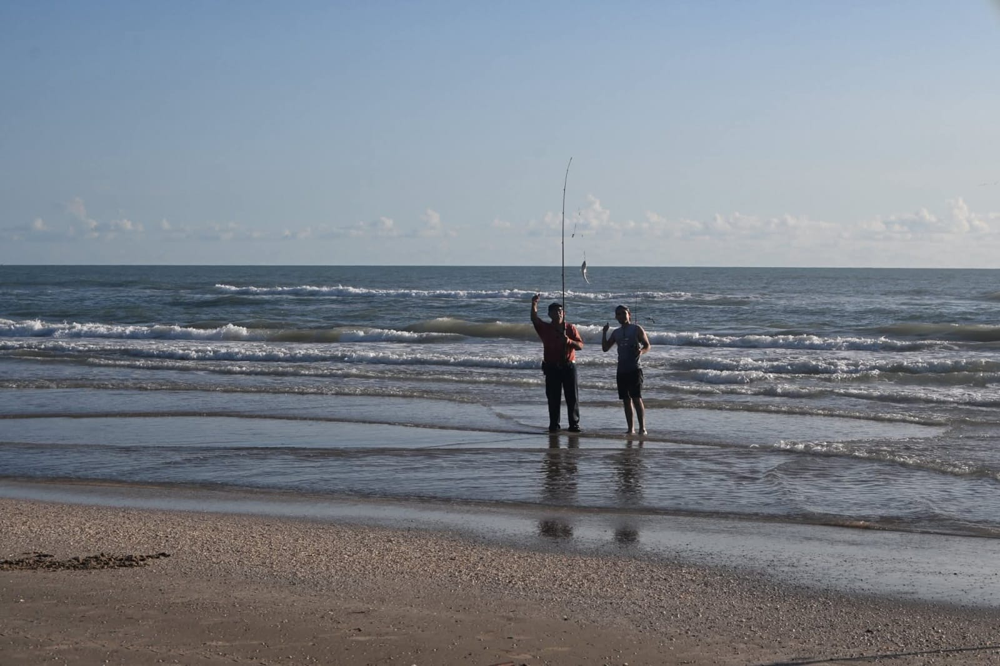
Ideal para torneos de pesca.
Vistas increíbles para relajarme.
Una historia de amor y sueños en Los Ángeles.
Aventura sobre ruedas y espionaje.
Amistad y amor a través de 20 años.

Mi platillo favorito por excelencia.
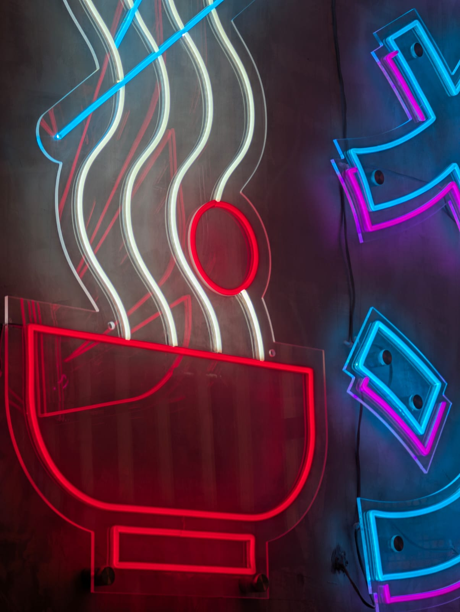
Comida reconfortante y variada.
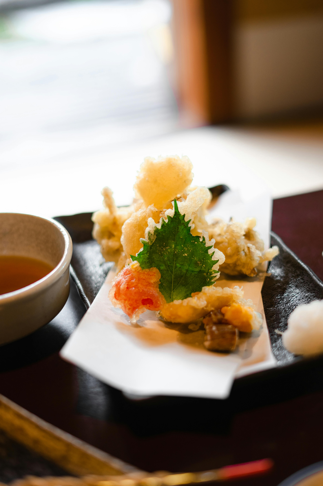
Texturas crujientes que me encantan.
Protección de datos y redes.
Análisis profundo de información.
El futuro de las aplicaciones web.
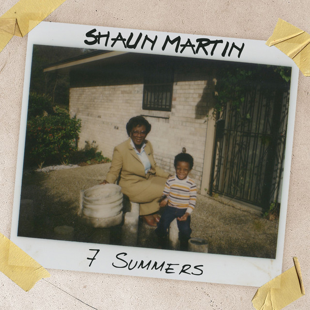
Influencia directa de Shaun Martin.
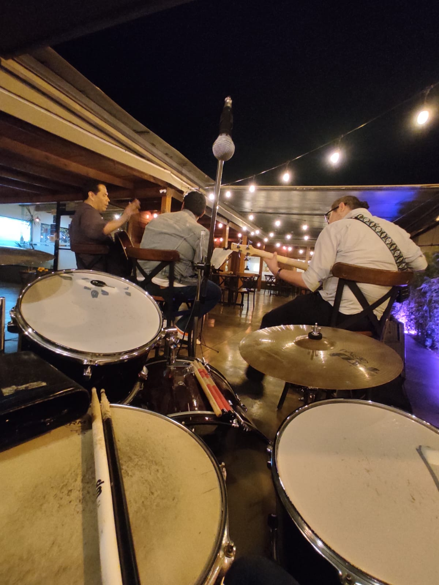
Ritmos que guían mi batería.
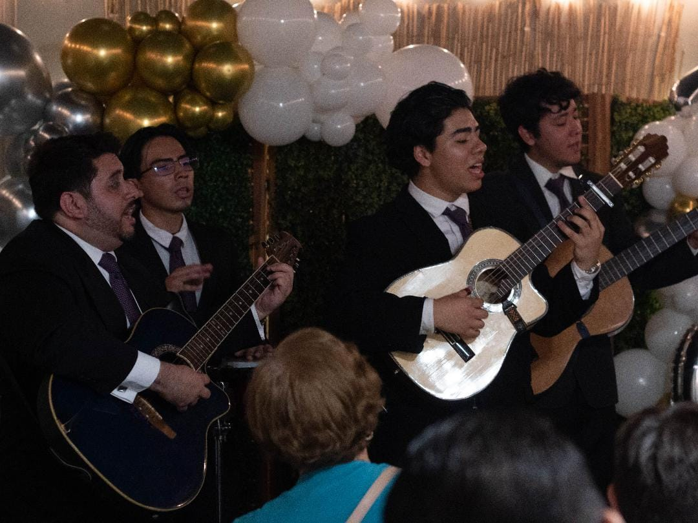
Música clásica para el alma.
Espero poder ir pronto a uno de sus conciertos.
Su creatividad y virtuosismo son una gran inspiración para mí.
Es un maestro de la armonía y la improvisación,
y su música me motiva a seguir explorando nuevos sonidos y técnicas en mis propios proyectos musicales.
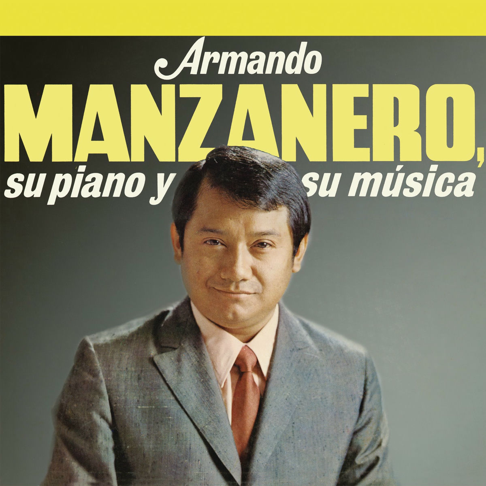
Sus composiciones y letras han dejado una huella imborrable en la música romántica. Su estilo único y su capacidad para transmitir emociones a través de sus canciones me inspiran a seguir creando música con pasión y dedicación.
Mi papá.
Su amor por la música y su habilidad para tocar varios instrumentos han sido una gran influencia en mi vida musical.
Me ha enseñado la importancia de la dedicación y la pasión por la música, y siempre me ha apoyado en mis proyectos musicales.